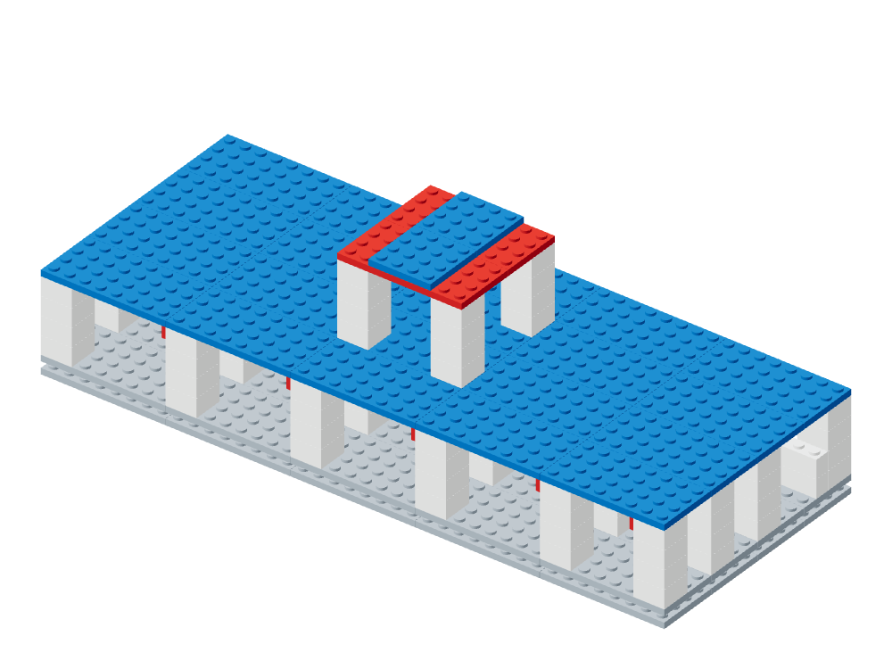
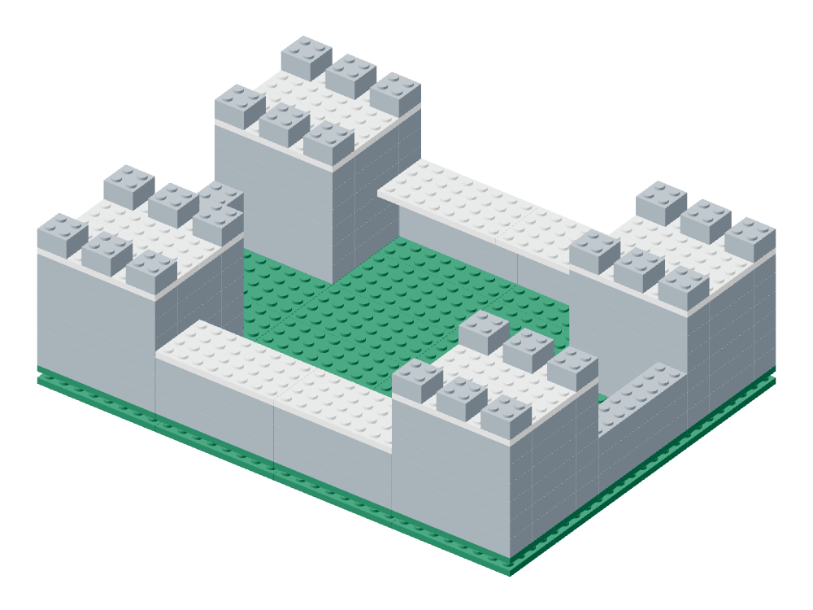
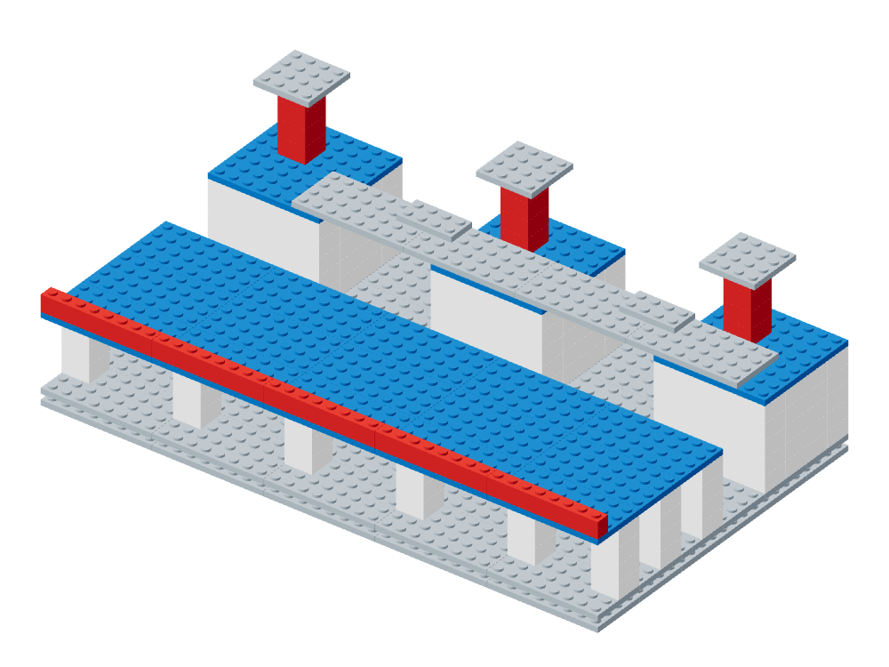
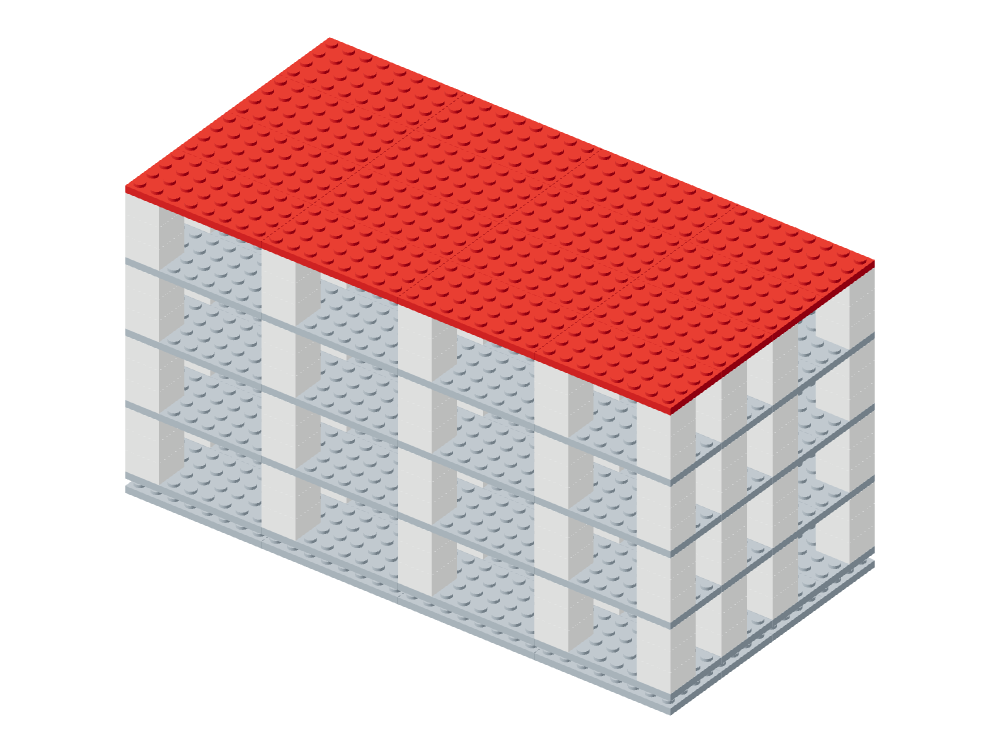

<!doctype html><html lang="zh-CN"><meta charset="utf-8"><meta name="viewport" content="width=device-width,initial-scale=1"><title>BrickAtlas Diagnostic-2</title><style>*{box-sizing:border-box}body{margin:0;font:15px/1.55 system-ui,sans-serif;color:#25332d}
main{max-width:1180px;margin:auto;padding:24px}h1{font-size:28px}h2{font-size:22px}h3{font-size:17px}
a{color:#146881}header{border-bottom:2px solid #287c66}article{border-bottom:1px solid #ccd4d2;padding:20px 0}
.grid{display:grid;grid-template-columns:repeat(2,minmax(0,1fr));gap:16px}img{width:100%;height:auto}
pre{white-space:pre-wrap;overflow-wrap:anywhere;background:#f1f4f3;padding:12px;max-height:280px;overflow:auto}
p{overflow-wrap:anywhere}figure{margin:0}figcaption{font-size:13px}@media(max-width:650px){main{padding:14px}.grid{grid-template-columns:1fr}h1{font-size:24px}}</style><main><header><h1>BrickAtlas Diagnostic-2</h1><p>共享对象的诊断、观测与可执行维修</p><p><a href="../DIAGNOSTIC_UPGRADE.zh-CN.md">升级报告</a> · <a href="public.json">公开题面</a> · <a href="stage-public.json">独立阶段题面</a> · <a href="audit.json">捷径审计</a></p></header><div class="grid"><article><a href="courtyard-museum.html"><h2>courtyard-museum</h2></a></article><article><a href="intercity-terminal.html"><h2>intercity-terminal</h2></a></article><article><a href="coastal-cargo-vessel.html"><h2>coastal-cargo-vessel</h2></a></article><article><a href="four-tower-citadel.html"><h2>four-tower-citadel</h2></a></article><article><a href="process-service-plant.html"><h2>process-service-plant</h2></a></article><article><a href="four-storey-archive.html"><h2>four-storey-archive</h2></a></article></div></main></html>